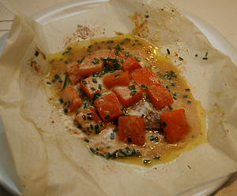

Emmentaler Kürbis-Schnitzel
5 von 6Ofen auf 220 °C vorheizen. Kürbis in feine Scheiben schneiden und auf ein mit Backpapier belegtes Blech geben. Salzen, pfeffern und mit wenig Oel bepinseln. In der Ofenmitte 10 Minuten garen. Temperatur auf 180 °C zurückschalten.
Schnitzel in der heissen Bratbutter beidseitig je 1 Minute scharf anbraten. Würzen.
Zwei Bogen Backpapier halbieren. Je 1 Schnitzel darauf geben. Mit den Kürbisscheiben belegen und mit Emmentaler-Käse bestreuen. 1 Bund Schnittlauch mit der Schere in Röllchen direkt über den Käse schneiden. Papier zu Beuteln verschliessen und mit je 2-3 Schnittlauchstängeln zusammenbinden. Auf ein mit Backpapier belegtes Blech geben. 12-15 Minuten in der Ofenmitte backen.
